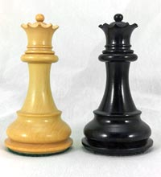
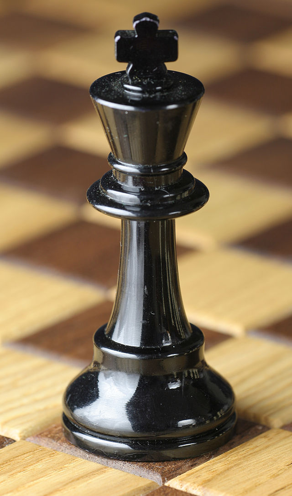

Bispos

A torre se move em linha reta horizontalmente e verticalmente pelo número de casas não ocupadas, até atingir o final do tabuleiro ou ser bloqueado por outra peça. Ele não pode pular outras peças. A torre captura no mesmo caminho em que se move, ocupando a casa onde se encontra a peça adversária.
Cavalos

O cavalo tem um movimento assemelhado a um "L" e, diferente das outras peças, pode pular as peças intervenientes. Captura tomando a casa ocupada pela peça adversária, sendo sempre no final do L.
Dama
A Dama movimenta-se em linhas retas pelas fileiras, colunas e diagonais no tabuleiro. Não pode pular suas próprias peças ou as adversárias e captura tomando a casa ocupada pela adversária.
Peões

O peão move-se verticalmente na coluna que encontra-se, sendo incapaz de recuar. No primeiro movimento, a partir do ponto de partida, pode avançar duas casas e, a partir daí, uma. Um peão pode capturar a peça imediatamente na fileira na diagonal
Rei
O Rei é a peça mais importante do xadrez ocidental, cuja captura é o único objetivo do jogo,uma vez que não pode ser trocado durante uma partida, ele é considerado uma peça de valor inestimável.
Torres

A torre se move em linha reta horizontalmente e verticalmente pelo número de casas não ocupadas, até atingir o final do tabuleiro ou ser bloqueado por outra peça. Ele não pode pular outras peças. A torre captura no mesmo caminho em que se move, ocupando a casa onde se encontra a peça adversária.